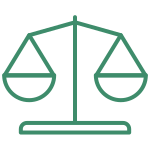
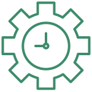
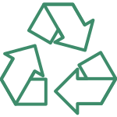
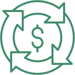

Навчально-практичний курс з підготовки фахівців для управління відходами відповідно до нового законодавства
ZERO WASTE Academy
Що таке Zero Waste Academy
це унікальний навчально-практичний курс про принципи керування відходами (ТПВ) відповідно до принципів zerо waste та циркулярної економіки.
Мета проєкту
надати достатню кількість знань та навичок для фахівців у сфері відходів, керуючих ОСББ, ОСМ, представників ОМС, екологічних ГО, активістів для успішної реалізації сучасних екологічних проєктів, зміни/адаптації стратегії, планів дій, розробки нових програм з поводження з ТПВ на місцевому рівні.
Завдання
- підготувати для українського ринку кваліфікованих та озброєних передовими знаннями фахівців/фахівчинь
- зменшити кількість відходів на полігонах
- впровадити чи допомогти впровадженню якомога більшої кількості zero waste проєктів та стартапів в Україні
- допомогти громадам України у процесі перетворення на туристичні привабливі та чисті
- надати максимальну кількість фактів та аргументів для того, щоб кожен/на слухач/ка переконалася, що запобігання та ієрархія у сфері відходів
Переваги
Наші переваги засвідчать наші випускники та випускниці:
системний підхід формує картину світу, а не фрагментарні уявлення, які згодом забудуться
ціннісний підхід до справи - наші знання формують послідовників/ць концепції zero waste: ви вірите у те, що робите, як і навіщо трансформувати свою реальність
мультидисциплінарність - ми надаємо знання та навички не тільки з теми керування відходами, а також формуємо у Вас самодостатнього та універсального менеджера/ку: ви розумієтеся у проєктному менеджменті, у комунікаційний та адвокаційний кампаніях, у джерелах фінансування та фандрейзингу. Навіть якщо ці завдання у команді виконуєте не ви, то ви можете оцінити пропозиції ваших партнерів, співробітників та витрачати кошти на те, що працює
коучингова підтримка - у тому випадку, коли “лупаєте скалу”, працюєте над зміностворенням, важливо знати та вміти раціонально використовувати свої ресурси. Ваші приховані можливості, віру у себе для роботи на рівні громади допоможе розкрити наші коучі, які спеціалізуються з теми громадянського суспільства та інновацій
Історія
За 2020-2021 роки ми випустили 3 курси, а це близько 100 випускників та випускниць
Тематика курсів, які знання отримає слухач
Законодавство
Проєктний менеджмент
Технології утилізації
Циркулярна економіка
Кейси